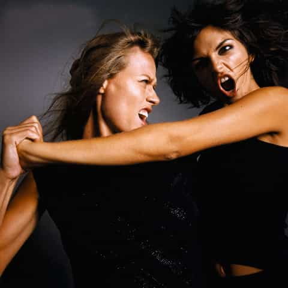
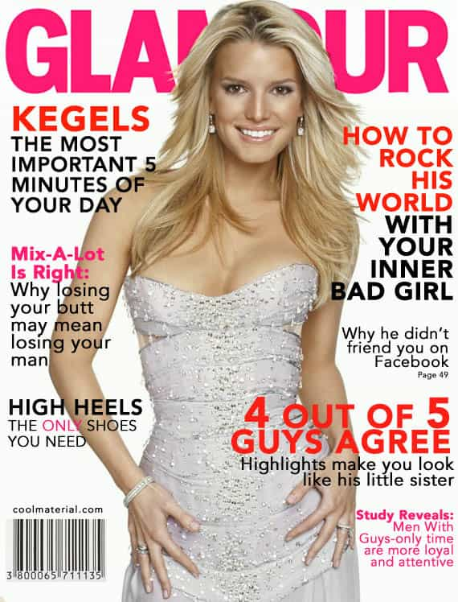

< < < Back
A Woman’s Most Potent Weapon Is Emotional Manipulation – Return Of Kings
It is already old news that the founder and CEO of Lululemon was forced to resign due to his “controversial” remarks on the proper use of his company’s clothing. When I wrote my original article, the thought that Chip Wilson may be risking his career (or at least his position) with his courageously honest approach certainly crossed my mind. To quote one of the great Red Pill works of fiction:
“This is Jack’s total lack of surprise”.

… But I digress…
A recent article by Raywolf about the predatory nature of the mate-seeking woman sent me down a trail of thought that I still now find myself travelling on. I think I found some of the ideas expressed in the article, and the literature therein referenced, an undeniable parallel to relationships I have experienced in my life.
“We’ve all had those clinging girl friends determined to make us swear undying love to them, and as the matrix glitched around us, something was not right but we couldn’t quite put our finger on it. ”
This line in particular struck a chord with me. I have experienced this moment of clarity in relationships more than once. This is the Red Pill moment when you become aware that your girlfriend’s constant professions of love are over embellished at best, and at worst, blatant manipulation. I used to believe that the girls I experienced this with just happened to be psychologically unstable, but I am beginning to wonder if this disingenuous emotional snaring is a basic female survival tactic. What if women are, fundamentally, emotional predators? Would this explain the propensity for young women to socially combat each other when placed under the same roof, whether it be at home or at the work place? After all, what would predators do if placed in the same cage?

I do not claim to know that any of this is fact. As a man of science, I understand that nothing is fact until rigorously scientifically proven. However, over the decades, the concept of evolution has proven a very useful tool for explaining some of the more peculiar behavioural traits exhibited by our species. In my opinion, Evolutionary Psychology is the one branch of psychology that time and time again can accurately explain behaviour, simply because it relies on one and only one basic premise: we evolved.
With this in mind, reflect on this statement: in a world of men and beasts, man can survive without woman, but woman cannot survive without man. For obvious physical reasons, this statement holds true. In the environment of evolutionary adaptiveness (or EEA), man had a body suited for fighting both predators and other men, and could mate and reproduce several times a day, without ever having to pair bond with a woman. Woman’s survival, however, depended on her ability to emotionally snare a man to protect both herself and her offspring. Is it any wonder why women have developed adaptations to emotionally manipulate men? In a world full of physical predators, woman has made herself an emotional predator in order to protect herself and her children. Whereas man’s weapon is his physical prowess, woman’s weapon is her emotional manipulation.
But here comes the part some of you may not want to hear: you cannot blame women for this. We are all the products of a cruel and unfair existence. We are all the outcome of a never ending arms race…
It is likely that women are, most of the time, not even fully consciously aware of the emotional weaponry they employ. I am by no means saying that psychologically healthy women do not believe they are “in love”, and are instead just faking the entire ordeal; this is not how evolution directs us. Rather, the question should be: what is this “love” they are feeling, and is it fundamentally self-serving, and thus, categorically disingenuous? Do they love the man, or do they love the feeling they derive from the man? I cannot count the number of times girlfriends have told me that they love the way I make them feel.
It is interesting to note how young teenage girls seem to have a single track mind during the formative years of adolescence. Ask any parent of a gossiping teenage girl and they will tell you the single subject matter is boys. That is not to say that boys are not fascinated with their female counterparts (trust me, we were), but their interests seem to expand beyond just the opposite sex. For that matter, the primary subject matter for entertainment geared towards adult women tends to be almost exclusively the subject of men. Whether it is the predictable rom com, or the latest edition of Cosmo, the topic is men; falling in love with men, how to attract men, how to please your man, etc. etc. etc. This all starts to make sense if we take into account a woman’s evolutionary need for a male protector. As men, we want women, but we do not always need them around. In the EEA, this was not the case for women. Of course, the feminists would tell me this is simply the result of the patriarchy. Alas, this is one conspiracy theory I do not buy into…

And this brings me back to Chip Wilson (yes, again). If women are emotional predators, would it follow that feminism itself, being a product of women, is fundamentally an emotionally predatory school of thought? It certainly seemed like the sharks were circling around Chip, even before he left the television studio. What is the history of feminism if not a focused and unrelenting attack on masculinity, the alpha male, and the law of the jungle? In this case, the predatory attack was on reason itself! Dare I say that these feminist attacks stem more from an emotional response than a coherent, logically sound theory? Where a feminist sees patriarchy, an evolutionary psychologist sees inevitability.
Read More: Why Modern Feminism Is White Woman’s Privilege


{kind=link}
{kind=link}
{kind=link}